• High-Speed WiFi Repeater :Experience seamless internet connectivity with this WiFi repeater that offers a maximum LAN data rate of 300Mbps. Ideal for large homes or offices with weak internet signal.
• Long Range Signal Booster :This wireless WiFi repeater ensures comprehensive coverage by enhancing the signal strength over a long range, eliminating dead spots in your home or office.
• Easy Installation :With its user-friendly design, this WiFi extender can be easily set up without the need for professional assistance. Simply plug it in and enjoy better WiFi signal.
• Durable Construction :Originating from Mainland China, this WiFi repeater is built with high-quality materials, guaranteeing durability and longevity for long-term use.
• Compatible with Other Brands :This versatile WiFi extender is compatible with other brands, making it a practical choice for those who prefer to mix and match their electronic devices.
• European Plug Design :The European plug design of this WiFi repeater ensures easy compatibility with European outlets, providing a hassle-free usage experience.
300M signal enhancer: The signal enhancer provides a speed of up to 300Mbps, allowing you to enjoy a fast and stable internet connection.
4 antenna router: The router is equipped with 4 antennas, providing a wider coverage range, ensuring that you can connect to the internet from anywhere in your home.
WPS function: With WPS function, you can easily connect your device to the internet without entering a password or complex settings.
802.11n standard: Routers follow the 802.11n standard, which provides faster and more reliable internet connections compared to the old standard.
Working voltage: 110-220V
Transmission rate: 300Mbps
Network port: 100M * 2
Supports router, relay/AP modes
Protocol is 802.11 b/g/n
Color box size: 20*9.2*7.3cm
Gross weight: 148g
Net weight: 75g
Notes:
1. When the repeater is plugged in and used, use your phone or computer's wifi to search for Repeater XXXXXX. Clicking on the connection will automatically redirect you to the settings page (note: if the phone clicks on the connection, the redirect interface will not appear. Please click to select "ignore this network" and then reopen the wifi to reconnect. If this operation still does not work, you can manually enter the website address "192.168.11.1" in the browser)
2. Use relay mode. If the WIFI name cannot be found, try turning the phone's WIFI switch back on. If not, long press the side reset button until the switch light flashes and releases, then repeat the above steps
3. If you need to connect a network cable and use AP mode, please insert the repeater first, select AP mode, set the password, and then connect the network cable to avoid setting the password before connecting the network cable, which may cause abnormalities
4. The product is equipped with a user manual that provides detailed instructions and answers to common questions. Please use the product in conjunction with the manual
Specification: EU
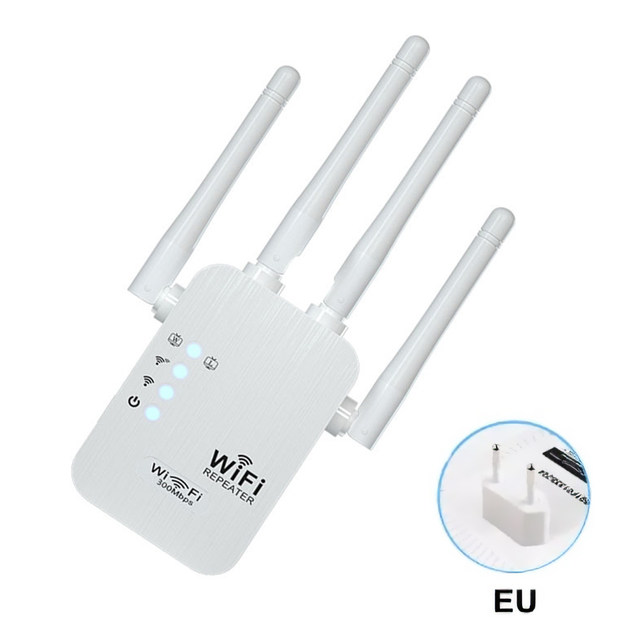
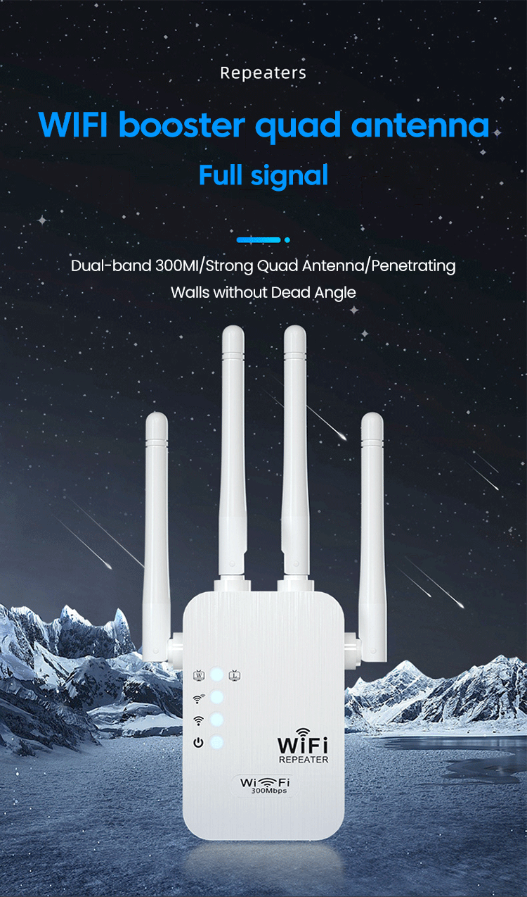
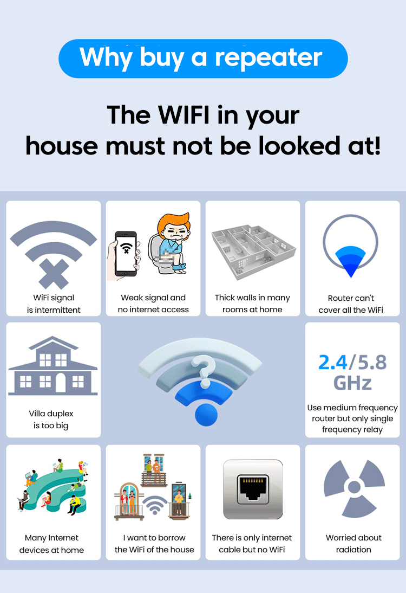
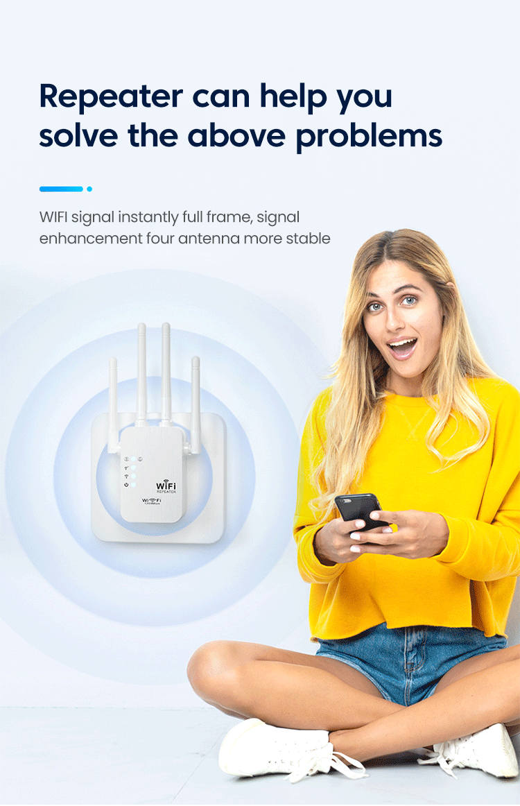
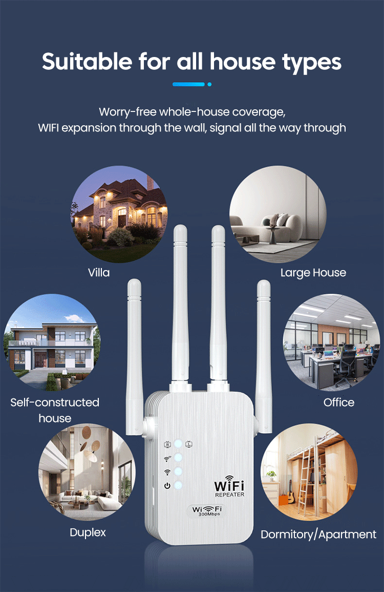
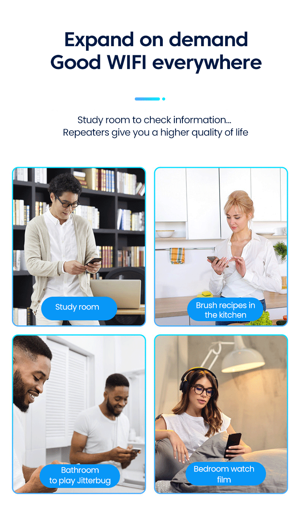
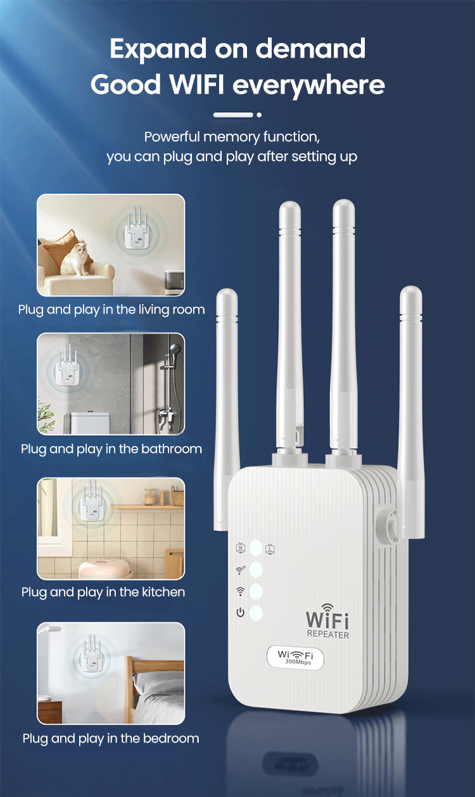
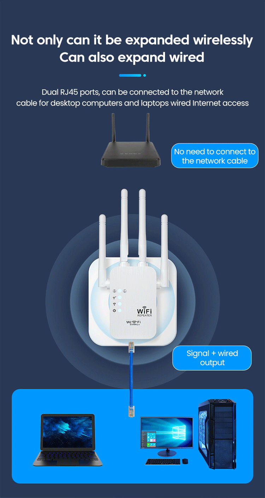
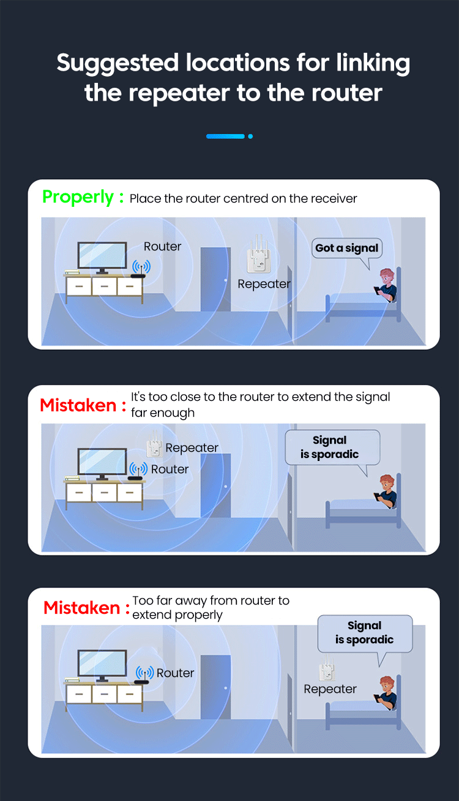
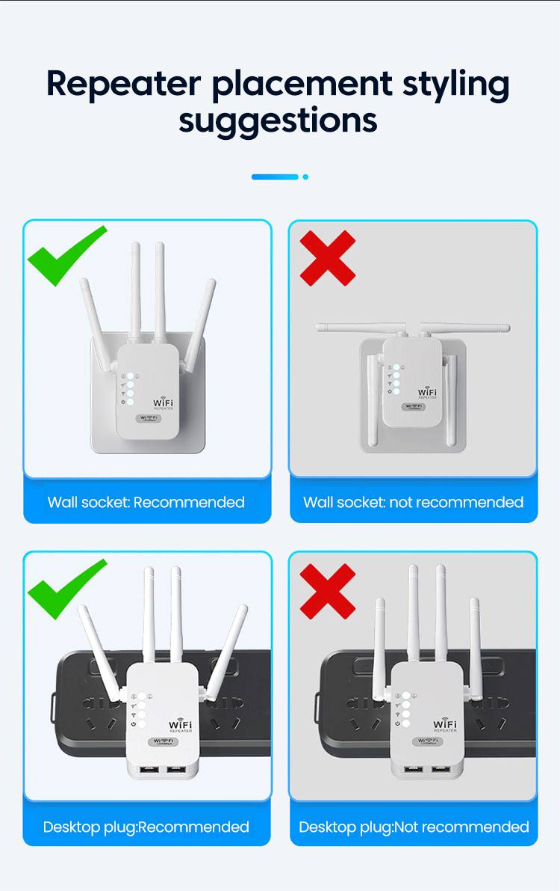
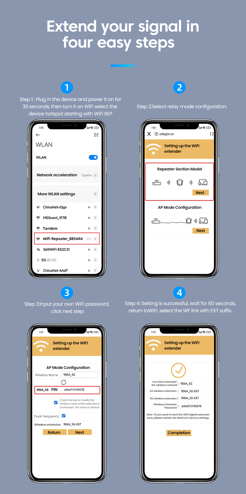
Note
1.The most important step is the second step. Select the WiFi name of your own router from the list below, then go back to the top and enter the superior wireless password. If you want the correct password, you can proceed to the next step.
2. After setting it up, you cannot rush to connect to this hotspot. You need to wait for the third one to light up before connecting, because after setting it up, it needs to match the data signal with the router. If you rush to connect, it will interrupt his network data, otherwise the matching will not be successful.
3. The product specification is EU, not applicable to US. Please purchase carefully according to the pins!
FAQ:
Q: Do I need to plug in a network cable to use a repeater?
A: When expanding the signal of the repeater, there is no need to plug in a network cable. It is directly inserted into the socket to receive the router's signal and transmit wireless signals
Q: Is one repeater sufficient for having multiple rooms at home?
A: If it is necessary to fully cover multiple holiday WIFI signals, it is necessary to add an appropriate number of repeaters according to the specific environment
Q: Is the network speed faster when using a repeater?
A: Repeaters can expand the coverage range of wireless signals, but cannot increase network speed
Q: How to place the repeater?
A: The optimal placement of a repeater is between the router and the desired expansion location, which is equivalent to placing it in the middle and receiving signals before transmitting them to the desired location. The specific placement depends on the actual usage situation